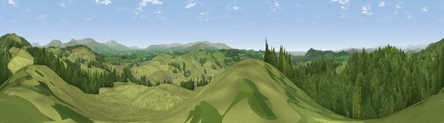

Viewpoint near Dalton
#6575 in England · top 24% of its area beats it · near DaltonWhere it is
The exact computed spot (SD 55050 74625). Click the marker for map links.
The view, rendered

A 360° render of this exact spot computed from the terrain model, tree cover and land cover — summer colours, afternoon light, calibrated against photographs of famous viewpoints. Real trees, hedges and buildings will differ in detail.
The panorama
Grey silhouette: terrain skyline in each direction (720 bearings, Earth curvature and refraction included). Dashed green: skyline with trees (+15 m) and buildings (+8 m) as obstacles. Blue strip: how far the ground is visible on each bearing.
Where the view opens
Wedge length = distance to the farthest visible ground on that bearing (vegetation-aware). Rings at 10, 25 and 50 km.
What fills the view
51% grassland · 47% woodland ·
Angular shares of the visible panorama (visual magnitude), not map area. Landscape diversity 0.34 (0–1 Shannon).
Key numbers
More beautiful places nearby
The staircase of upgrades: each row has a higher view potential than everything closer. Driving times are estimates from straight-line distance, calibrated against real road routing — check an actual route before setting out.
| Place | Direction | Drive | Score |
|---|---|---|---|
| Viewpoint near Dalton | NNE · 1 km | ~3 min | 68.5 |
| Viewpoint near Dalton | N · 3 km | ~7 min | 73.0 |
| Viewpoint near Lupton | N · 5 km | ~12 min | 74.7 |
| Farleton Fell [Holmepark Fell] | N · 6 km | ~12 min | 77.7 |
| Viewpoint near Lupton | NNW · 6 km | ~13 min | 78.7 |
| Warton Crag | WSW · 6 km | ~13 min | 83.2 |
| Viewpoint near Grange-over-Sands | WNW · 16 km | ~28 min | 83.4 |
| Viewpoint near Cartmel | WNW · 20 km | ~34 min | 87.0 |
54.16545, -2.68996 · source: screening · position refined by local search. Computed location — check access rights before visiting.